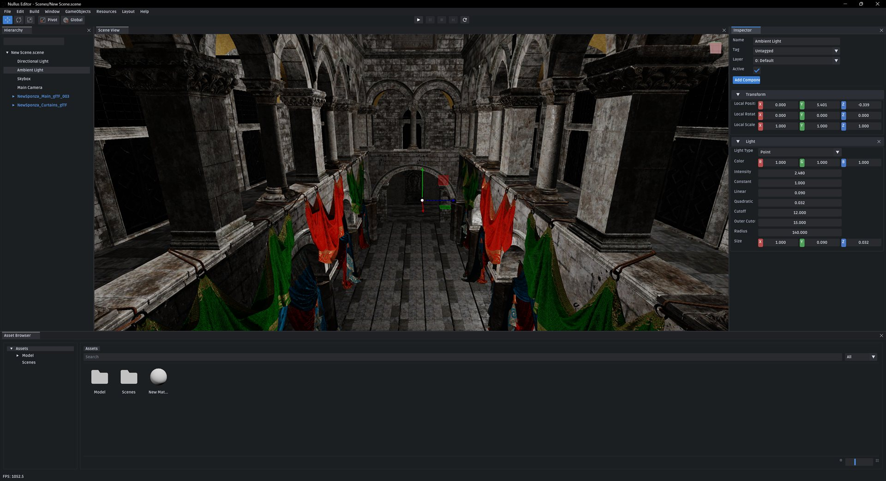
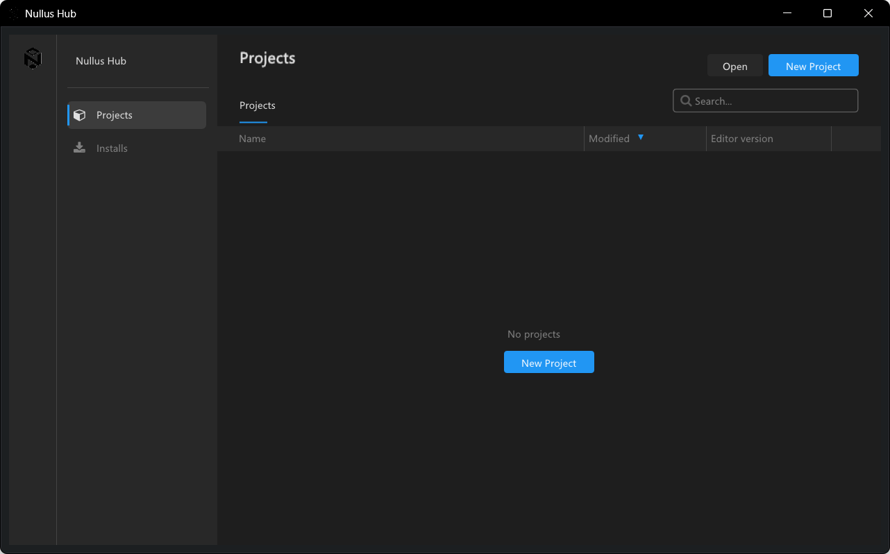

01 / MAINLINE CONNECTED
One runtime from Editor to Player
Edit scenes, assets, and scripts in the Editor, run them in Game, then ship them through a Build Profile. Content keeps one representation.
SOURCE AVAILABLE · REAL-TIME 3D
Nullus is a native C++20 engine for real-time creation. Scenes, assets, scripts, the Editor, runtime, and multi-backend rendering stay in one coherent workflow.

00WHY NULLUS
Nullus keeps authoring tools, runtime, and engine systems on one mainline. Start in the Editor or go straight into rendering, content, or scripting boundaries.
Edit scenes, assets, and scripts in the Editor, run them in Game, then ship them through a Build Profile. Content keeps one representation.
The Game Thread, Render Thread, and RHI Submit each own a clear stage. FrameGraph coordinates passes, resource states, and dependencies.
glTF, FBX, OBJ, PBR materials, Prefabs, and serialized scenes enter a project asset database with stable imported identities.
Both languages connect to the same GameObject, Component, input, and time systems. C# hot-reloads after an incremental build. Lua reloads on save.
01ENGINE SURFACE
From the first mesh to the final Player, every layer connects to a clear, observable, extensible engine mainline.
FrameGraph, HLSL, and a unified RHI give DX12, Vulkan, and Metal one rendering language.
Explore renderingHierarchy, Scene View, Inspector, play controls, and Asset Browser form a daily editing loop.
Explore the EditorModels, materials, textures, Prefabs, and serialized scenes connect to a project asset database.
Explore the asset pipelineShare a native scripting ABI, component lifecycle, input, and time systems while iterating in the Editor.
Physics, character control, animation, and particles share the same scene and runtime boundaries.
Explore physicsBuild Profiles collect dependencies, cook content, and assemble a runnable desktop Player.
Explore Player builds02UNDER THE HOOD
The Game Thread produces commands, the Render Thread builds frames, and the RHI submits in order. Every stage is observable and extensible.
Read the architecture docs ↗03THE CREATION LOOP
Keep context and reduce switching. Your scenes, content, and logic grow along the same mainline.
Create or open a project from the Launcher and enter the Editor.
Import assets, create Prefabs, and compose components in the Inspector.
Connect GameObjects, input, and time with C# or Lua.
Preview in the Editor and build a Player with a Build Profile.
04DEVELOPER PATH
The site shows what Nullus can do. The handbook gets it running. Choose an entry point and continue into the real project files and workflows.
Prepare dependencies, configure CMake, and build the Editor, Launcher, or Player with the right platform entry point.
Learn Scene View, Game View, Hierarchy, Inspector, Asset Browser, and the shortcuts that shape daily work.
Follow modules, reflection, serialization, jobs, editor extensions, and plugin boundaries back into the source.
05BUILD SURFACE
Nullus records platform build, runtime, and validation status separately. Check the boundary before choosing a target.
DX12
MSVC / Visual Studio 2022 for the full Editor-to-desktop-Player development path.
Platform details ↗Vulkan 1.1
GCC / Clang build entry for headless builds, Vulkan runtime work, and CI validation.
Platform details ↗Metal
A native build target and Metal backend are present. Runtime validation remains a separate device gate.
Platform details ↗—
Mobile, console, and Web targets are outside the current build and backend scope.
View roadmap ↗06BUILT IN THE EDITOR

NULLUS HUB07FIRST RUN
Prepare dependencies, configure a build directory, then launch the Editor. Platform scripts stay explicit and the project entry stays consistent.
# clone
git clone https://github.com/NullusEngine/Nullus.git
cd Nullus
# prepare + build Editor and Launcher
.\SetupDependencies.bat
cmake -S . -B build -G "Visual Studio 17 2022" -A x64
cmake --build build --config Debug --target Editor LauncherYOUR NEXT WORLD STARTS HERE